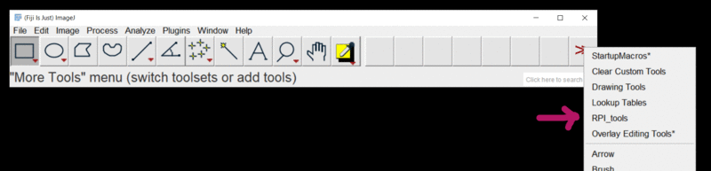
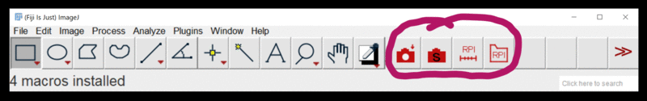
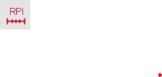

Leica S4E & S8APO
| Author: | Mitch Richling |
| Updated: | 2021-10-27 |
Copyright 2021 Mitch Richling. All rights reserved.
Table of Contents
1. Symbols & Formulas
1.1. Variables
| Variable | Description | Units | Notes |
|---|---|---|---|
| \(S_{MAG}\) | Magnification At Sensor | Ratio | |
| \(S_{FOVh}\) | Sensor Horizontal Field Of View | mm | |
| \(S_{FOVv}\) | Sensor Vertical Field Of View | mm | |
| \(I_{SCLh}\) | Image Horizontal Scale | Pixel/mm | |
| \(I_{SCLv}\) | Image Vertical Scale | Pixel/mm | |
| \(S_w\) | Sensor Physical Width | mm | |
| \(S_h\) | Sensor Physical Height | mm | |
| \(S_d\) | Sensor Physical Diagonal | mm | |
| \(S_A\) | Sensor Physical Area | square mm | |
| \(I_w\) | Image/Sensor Pixel Width | pixel | |
| \(I_h\) | Image/Sensor Pixel Height | pixel | |
| \(I_{MP}\) | Total number of Image/Sensor Pixels | Megapixel | |
| \(L_s\) | Length At Sensor | mm | |
| \(L_o\) | Object Length | mm | |
| \(A\) | Auxiliary | Ratio | |
| \(Z\) | Zoom | Ratio | |
| \(O_c\) | Camera Objective | Ratio | camera relay lens, camera port lens |
| \(O_d\) | Camera Objective Image Circle Diameter | mm | |
| \(P_w\) | Sensor Pixel Width | mm | |
| \(P_h\) | Sensor Pixel Height | mm | |
| \(P_{AR}\) | Pixel Aspect Ratio | Ratio | |
| \(V_{FOV}\) | Visual Field Of View | mm | |
| \(E_{FN}\) | Eyepiece Field Number | mm | |
| \(E_{MAG}\) | Eyepiece magnification | Ratio | |
| \(V_{MAG}\) | Visual Magnification | Ratio | |
| \(R_c\) | Reticle Unit Conversion Factor | mm/Ru | \(1\,\mathrm{Ru}=1\,\mathrm{mmu}\) @ \(Z=1\) & \(A=1\) |
| \(R_s\) | Reticle Scale | mm/Ru | |
| \(L_R\) | Length in Reticle Units | Ru | |
| \(I_{AR}\) | Image Aspect Ratio | Ratio | |
| \(P_{IJSPAR}\) | ImageJ Scale Pixel Aspect Ratio | Ratio | |
| \(W\) | Working Distance | mm |
1.2. Formulas
- Image/Sensor magnification
- \[S_{MAG} = \frac{L_s}{L_o} = A \cdot Z \cdot O_c\]
- Image/Sensor Horizontal Field Of View
- \[S_{FOVh} = \frac{\min(O_d, S_w)}{S_{MAG}}\]
- Image/Sensor Vertical Field Of View
- \[S_{FOVv} = \frac{\min(O_d, S_h)}{S_{MAG}}\]
- Image/Sensor Horizontal Scale
- \[I_{SCLh} = \frac{S_{MAG} \cdot I_w}{S_w} = \frac{S_{MAG}}{P_w}\]
- Image/Sensor Vertical Scale
- \[I_{SCLv} = \frac{S_{MAG} \cdot I_h}{S_h} = \frac{S_{MAG}}{P_h}\]
- Visual magnification
- \[V_{MAG} = A \cdot Z \cdot E_{MAG}\]
- Visual Field Of View
- \[V_{FOV} = \frac{E_{FN}}{A \cdot Z}\]
- Reticle Scale
- \[\frac{R_c}{Z \cdot A}\]
- Reticle Length Measurements
- \[\mathrm{Length}=R_s \cdot L_R\]
- Sensor Diagonal length
- \[S_d = \sqrt{S_w^2 + S_h^2}\]
- Sensor Pixel Width
- \[P_w = \frac{S_w}{I_w}\]
- Sensor Pixel Height
- \[P_h = \frac{S_h}{I_h}\]
- Pixel Aspect Ratio
- \[P_{AR} = \frac{P_w}{P_h} = \frac{S_w \cdot I_h}{I_w \cdot S_h}\]
- Image Aspect Ratio
- \[I_{AR} = \frac{I_w}{I_h}\]
- ImageJ Scale Pixel Aspect Ratio
- \[P_{IJSPAR} = \frac{1}{P_{AR}}\]
2. S4E
2.1. Magnification and FOV at Various Zoom Levels With 10x/23 Eyepiece
| \(A=1.0\times\) | \(W=110\,\mathrm{mm}\) | \(A=0.5\times\) | \(W=200\,\mathrm{mm}\) | \(A=1.6\times\) | \(W=55\,\mathrm{mm}\) | |
|---|---|---|---|---|---|---|
| \(Z\) | \(E_{MAG}\) | \(V_{FOV}\) | \(E_{MAG}\) | \(V_{FOV}\) | \(E_{MAG}\) | \(V_{FOV}\) |
| 0.63 | 6.30 | 36.51 | 3.15 | 73.02 | 10.08 | 22.82 |
| 0.80 | 8.00 | 28.75 | 4.00 | 57.50 | 12.80 | 17.97 |
| 1.00 | 10.00 | 23.00 | 5.00 | 46.00 | 16.00 | 14.38 |
| 1.25 | 12.50 | 18.40 | 6.25 | 36.80 | 20.00 | 11.50 |
| 1.60 | 16.00 | 14.38 | 8.00 | 28.75 | 25.60 | 8.98 |
| 2.00 | 20.00 | 11.50 | 10.00 | 23.00 | 32.00 | 7.19 |
| 2.50 | 25.00 | 9.20 | 12.50 | 18.40 | 40.00 | 5.75 |
| 3.00 | 30.00 | 7.67 | 15.00 | 15.33 | 48.00 | 4.79 |
2.2. Reticle Scale, Magnification, and FOV at Zoom Stops With 10x/23 Eyepiece
| \(A\) | \(Z\) | \(E_{MAG}\) | \(E_{FN}\) | \(R_s\) | \(V_{MAG}\) | \(V_{FOV}\) |
|---|---|---|---|---|---|---|
| 0.5 | 0.63 | 10 | 23 | 3.17460 | 3.15 | 73.02 |
| 0.5 | 3.00 | 10 | 23 | 0.66667 | 15.00 | 15.33 |
| 1.0 | 0.63 | 10 | 23 | 1.58730 | 6.30 | 36.51 |
| 1.0 | 3.00 | 10 | 23 | 0.33333 | 30.00 | 7.67 |
| 1.6 | 0.63 | 10 | 23 | 0.99206 | 10.08 | 22.82 |
| 1.6 | 3.00 | 10 | 23 | 0.20833 | 48.00 | 4.79 |
3. S8APO
3.1. Magnification and FOV at Various Zoom Levels With 10x/23 Eyepiece
| \(A=1.0\times\) | \(W=75\,\mathrm{mm}\) | \(A=0.63\times\) | \(W=101\,\mathrm{mm}\) | \(A=2.0\times\) | \(W=25\,\mathrm{mm}\) | |
|---|---|---|---|---|---|---|
| \(Z\) | \(V_{MAG}\) | \(V_{FOV}\) | \(V_{MAG}\) | \(V_{FOV}\) | \(V_{MAG}\) | \(V_{FOV}\) |
| 1.0 | 10.0 | 23.00 | 6.30 | 36.51 | 20 | 11.50 |
| 1.25 | 12.5 | 18.40 | 7.88 | 29.21 | 25 | 9.20 |
| 1.6 | 16.0 | 14.38 | 10.08 | 22.82 | 32 | 7.19 |
| 2.0 | 20.0 | 11.50 | 12.60 | 18.25 | 40 | 5.75 |
| 2.5 | 25.0 | 9.20 | 15.75 | 14.60 | 50 | 4.60 |
| 3.2 | 32.0 | 7.19 | 20.16 | 11.41 | 64 | 3.59 |
| 4.0 | 40.0 | 5.75 | 25.20 | 9.13 | 80 | 2.88 |
| 5.0 | 50.0 | 4.60 | 31.50 | 7.30 | 100 | 2.30 |
| 6.3 | 63.0 | 3.65 | 39.69 | 5.79 | 126 | 1.83 |
| 8.0 | 80.0 | 2.88 | 50.40 | 4.56 | 160 | 1.44 |
3.2. Reticle Scale, Magnification, and FOV at Zoom Stops With 10x/23 Eyepiece
| \(A\) | \(Z\) | \(E_{MAG}\) | \(E_{FN}\) | \(R_s\) | \(V_{MAG}\) | \(V_{FOV}\) |
|---|---|---|---|---|---|---|
| 0.63 | 1 | 10 | 23 | 1.58730 | 6.30 | 36.51 |
| 0.63 | 8 | 10 | 23 | 0.19841 | 50.40 | 4.56 |
| 1.00 | 1 | 10 | 23 | 1.00000 | 10.00 | 23.00 |
| 1.00 | 8 | 10 | 23 | 0.12500 | 80.00 | 2.88 |
| 2.00 | 1 | 10 | 23 | 0.50000 | 20.00 | 11.50 |
| 2.00 | 8 | 10 | 23 | 0.06250 | 160.00 | 1.44 |
3.3. Numerical Aperture With No Auxiliary Lens
| Zoom | NA |
|---|---|
| 1.0 | 0.026 |
| 1.25 | 0.031 |
| 1.6 | 0.038 |
| 2.0 | 0.046 |
| 2.5 | 0.056 |
| 3.2 | 0.069 |
| 4.0 | 0.081 |
| 5.0 | 0.093 |
| 6.3 | 0.100 |
| 8.0 | 0.100 |
3.4. Leica C-Mount Video Objective Data
| Leica Part # | Leica Part Name | \(O_d\) | Notes | Ref |
|---|---|---|---|---|
| 10445928 | Leica Video Objective 0.32x | 6.72 | Estimated \(O_d\) | co32 |
| 10450528 | Leica Video Objective 0.5x | 10.50 | Measured \(O_d\) | co50 |
| 10447367 | Leica Video Objective 0.63x | 13.23 | Estimated \(O_d\) | co63 |
| 10446307 | Leica Video Objective 0.8x | 16.80 | Estimated \(O_d\) | co80 |
3.5. Attaching Cameras
The Leica documentation suggests using a chain of adapters for attaching a generic digital camera. The first part of the chain is one of the following three parts: 10447436 1.6× DSLR tube, 10446175 2.5× DSLR tube, or 10445930 1.0× video/photo objective. Next will be one or more adapters for your camera. The result can be a tower of adapters taller than your microscope! For cameras with large sensors, this really is the only way to go. An excellent write-up for this approach may be found here. A good discussion on MicrobeHunter.com may found here.
For cameras with Micro Four Thirds and smaller sensors, a simpler approach is connect your camera via a c-mount adapter to one of Leica's "C-Mount Video Objectives": 10445928 0.32x, 10450528 0.5x, 10447367 0.63x, or 10446307 0.8x. These adapters are intended to be used with Leica's microscope cameras, but they will work with any c-mount camera – including your SLR with a c-mount adapter.
With the 0.5x objective one will obtain a nice 10.5mm image circle which is just about perfect for whole field imaging with the 13mm tall sensor in a Micro Four Thirds camera.
I use two cameras with my S8APO:
- Olympus OM-D E-M1 Mark II with a 0.5x or 0.32x video objective
- A DIY solution with a Raspberry Pi & Raspberry Pi HQ Camera attached to a 0.32x video objective.
3.6. Camera FOV & Image Scales
| RPI | OLY | |||||||||||||
|---|---|---|---|---|---|---|---|---|---|---|---|---|---|---|
| \(A\) | \(Z\) | \(O_c\) | \(O_d\) | \(S_{MAG}\) | \(P_{IJSPAR}\) | \(I_{SCLh}\) | \(I_{SCLv}\) | \(S_{FOVh}\) | \(S_{FOVv}\) | \(P_{IJSPAR}\) | \(I_{SCLh}\) | \(I_{SCLv}\) | \(S_{FOVh}\) | \(S_{FOVv}\) |
| 0.63 | 1 | 0.50 | 10.5 | 0.32 | 1.0000000 | 203.23 | 203.23 | 19.96 | 14.96 | 0.9961686 | 93.85 | 94.21 | 33.33 | 33.33 |
| 0.63 | 8 | 0.50 | 10.5 | 2.52 | 1.0000000 | 1625.81 | 1625.81 | 2.49 | 1.87 | 0.9961686 | 750.79 | 753.67 | 4.17 | 4.17 |
| 1.00 | 1 | 0.50 | 10.5 | 0.50 | 1.0000000 | 322.58 | 322.58 | 12.57 | 9.42 | 0.9961686 | 148.97 | 149.54 | 21.00 | 21.00 |
| 1.00 | 8 | 0.50 | 10.5 | 4.00 | 1.0000000 | 2580.65 | 2580.65 | 1.57 | 1.18 | 0.9961686 | 1191.72 | 1196.31 | 2.62 | 2.62 |
| 2.00 | 1 | 0.50 | 10.5 | 1.00 | 1.0000000 | 645.16 | 645.16 | 6.29 | 4.71 | 0.9961686 | 297.93 | 299.08 | 10.50 | 10.50 |
| 2.00 | 8 | 0.50 | 10.5 | 8.00 | 1.0000000 | 5161.29 | 5161.29 | 0.79 | 0.59 | 0.9961686 | 2383.45 | 2392.62 | 1.31 | 1.31 |
4. Reticle Unit Conversion Software For free42 and DM42
4.1. The menu
| Key | Without [SHIFT] |
With [SHIFT] |
Notes |
|---|---|---|---|
| A | Store A | Display A | Actually stored in variable "mrcvA" |
| Z | Store Z | Display Z | Actually stored in variable "mrcvZ" |
| Rc | Store Rc | Display Rc | Actually stored in variable "mrcvRc" |
| ▒▒▒▒ | |||
| ▒▒▒▒ | |||
| CONV | Convert from Reticle Units | Convert from Reticle Units | |
| Setting 1: "4;.5" | Leica S4; A=0.50; Z=0.63 | Leica S4; A=0.50; Z=3.00 | Modify as required! |
| Setting 2: "4;1" | Leica S4; A=1.00; Z=0.63 | Leica S4; A=1.00; Z=3.00 | Modify as required! |
| Setting 3: "4;1.6" | Leica S4; A=1.60; Z=0.63 | Leica S4; A=1.60; Z=3.00 | Modify as required! |
| Setting 4: "8;.63" | Leica S8APO; A=0.63; Z=1.00 | Leica S8APO; A=0.63; Z=8.00 | Modify as required! |
| Setting 5: "8;1" | Leica S8APO; A=1.00; Z=1.00 | Leica S8APO; A=1.00; Z=8.00 | Modify as required! |
| Setting 6: "8;2" | Leica S8APO; A=2.00; Z=1.00 | Leica S8APO; A=2.00; Z=8.00 | Modify as required! |
The setting sections of the code should be modified to meet the end user's needs. In my case, I have two zoom microscopes (Leica S4E and Leica S8APO). They
both have two zoom stops (upper and lower), and I have two auxiliary lenses for each. That's a total of 12 different configurations. I decided use 6 menu
keys each with two sets of settings – the scope's lower zoom stop is used when pressed without [SHIFT], and the upper zoom stop when use with [SHIFT].
4.2. The code
While this code isn't very useful without being customized to the particular settings the end user needs, it can be test driven as-is by cut-n-pasting the code below into free42 or by installing the raw file from github.
@@@@@@@@@@@@@@@@@@@@@@@@@@@@@@@@@@@@@@@@@@@@@@@@@@@@@@@@@@@@@@@@@@@@@@@@@@@@@@@@ (MRCONV) @@@@ DSC: Convert Reticle Units to Physical Units LBL "MRCONV" LBL 01 @@@@ Conversion & Variable Menu Page CLMENU "A" KEY 1 XEQ 03 "Z" KEY 2 XEQ 04 "Rc" KEY 3 XEQ 05 "CONV" KEY 6 XEQ 06 KEY 7 GTO 02 KEY 8 GTO 02 KEY 9 GTO 00 MENU STOP GTO 01 LBL 02 @@@@ Quick Settings Menu Page CLMENU "4;.5" @@@@ Setting 1 KEY 1 GTO 07 "4;1" @@@@ Setting 2 KEY 2 GTO 08 "4;1.6" @@@@ Setting 3 KEY 3 GTO 09 "8;.63" @@@@ Setting 4 KEY 4 GTO 10 "8;1" @@@@ Setting 5 KEY 5 GTO 11 "8;2" @@@@ Setting 6 KEY 6 XEQ 12 KEY 7 GTO 01 KEY 8 GTO 01 KEY 9 GTO 00 MENU STOP GTO 02 LBL 00 @@@@ Application Exit EXITALL RTN LBL 03 @@@@ Code for menu key A FC? 64 STO "mrcvA" VIEW "mrcvA" RTN LBL 04 @@@@ Code for menu key Z FC? 64 STO "mrcvZ" VIEW "mrcvZ" RTN LBL 05 @@@@ Code for menu key Rc FC? 64 STO "mrcvRc" VIEW "mrcvRc" RTN LBL 06 @@@@ Code for menu key CONV RCL× "mrcvRc" RCL÷ "mrcvA" RCL÷ "mrcvZ" RTN LBL 07 @@@@ Code for Setting 1 -- "4;.5" 1 @@@@ Rc Value for Setting 1 -- "4;.5" STO "mrcvRc" R↓ 0.5 @@@@ A Value for Setting 1 -- "4;.5" STO "mrcvA" R↓ FC? 64 0.63 @@@@ Z Value for no SHIFT Setting 1 -- "4;.5" FS? 64 3.0 @@@@ Z Value for SHIFT Setting 1 -- "4;.5" STO "mrcvZ" GTO 01 LBL 08 @@@@ Code for Setting 2 -- "4;1" 1 @@@@ Rc Value for Setting 2 -- "4;1" STO "mrcvRc" R↓ 1.0 @@@@ A Value for Setting 2 -- "4;1" STO "mrcvA" R↓ FC? 64 0.63 @@@@ Z Value for no SHIFT Setting 2 -- "4;1" FS? 64 3.0 @@@@ Z Value for SHIFT Setting 2 -- "4;1" STO "mrcvZ" GTO 01 LBL 09 @@@@ Code for Setting 3 -- "4;1.6" 1 @@@@ Rc Value for Setting 3 -- "4;1.6" STO "mrcvRc" R↓ 1.6 @@@@ A Value for Setting 3 -- "4;1.6" STO "mrcvA" R↓ FC? 64 0.63 @@@@ Z Value for no SHIFT Setting 3 -- "4;1.6" FS? 64 3.0 @@@@ Z Value for SHIFT Setting 3 -- "4;1.6" STO "mrcvZ" GTO 01 LBL 10 @@@@ Code for Setting 4 -- "8;.63" 1 @@@@ Rc Value for Setting 4 -- "8;.63" STO "mrcvRc" R↓ 0.63 @@@@ A Value for Setting 4 -- "8;.63" STO "mrcvA" R↓ FC? 64 1.0 @@@@ Z Value for no SHIFT Setting 4 -- "8;.63" FS? 64 8.0 @@@@ Z Value for SHIFT Setting 4 -- "8;.63" STO "mrcvZ" GTO 01 LBL 11 @@@@ Code for Setting 5 -- "8;1" 1 @@@@ Rc Value for Setting 5 -- "8;1" STO "mrcvRc" R↓ 1.0 @@@@ A Value for Setting 5 -- "8;1" STO "mrcvA" R↓ FC? 64 1.0 @@@@ Z Value for no SHIFT Setting 5 -- "8;1" FS? 64 8.0 @@@@ Z Value for SHIFT Setting 5 -- "8;1" STO "mrcvZ" GTO 01 LBL 12 @@@@ Code for Setting 6 -- "8;2" 1 @@@@ Rc Value for Setting 6 -- "8;2" STO "mrcvRc" R↓ 2.0 @@@@ A Value for Setting 6 -- "8;2" STO "mrcvA" R↓ FC? 64 1.0 @@@@ Z Value for no SHIFT Setting 6 -- "8;2" FS? 64 8.0 @@@@ Z Value for SHIFT Setting 6 -- "8;2" STO "mrcvZ" GTO 01 END
5. S-Series Leica Parts
| Leica Part # | Leica Part Name |
|---|---|
| 10446298 | Leica S8 APO |
| 10446293 | Leica S4 E |
| 10447136 | 10x/23B eyepiece for eyeglasses, fixed |
| 10447137 | 10x/23B eyepiece for eyeglasses, adjustable |
| 10447138 | 16x/15B eyepiece for eyeglasses, fixed |
| 10447139 | 16x/15B eyepiece for eyeglasses, adjustable |
| 10446447 | Reticle 10 mm/0.1 mm |
| 10446448 | Reticle 5 mm/0.1 mm |
| 10446449 | Reticle 5 mm/0.05 mm |
| 10447000 | Reticle 100 scale intervals / 0.002" |
| 10447001 | Reticle 100 scale intervals / 0.001" |
| 10447002 | Reticle 150 scale intervals / 0.0005" |
| 10446334 | Achro Auxiliary 0.32× for A8, WD 200 mm |
| 10446335 | APO Auxiliary 0.63× for A8, WD 100 mm |
| 10446336 | APO Auxiliary 1.6× for A8, WD 37 mm |
| 10446337 | APO Auxiliary 2.0× for A8, WD 25 mm |
| 10446316 | Auxiliary 0.32× for S4/S6, WD 300 mm |
| 10446318 | Auxiliary 0.5× for S4/S6, WD 200 mm |
| 10446319 | Auxiliary 0.63× for S4/S6, WD 155 mm |
| 10446320 | Auxiliary 0.75× for S4/S6, WD 130 mm |
| 10446321 | Auxiliary 1.6× for S4/S6, WD 55 mm |
| 10446322 | Auxiliary 2.0× for S4/S6, WD 35 mm |
| 10446325 | Auxiliary 0.3–0.4× for S4/S6 (Adjustable), WD 200–350mm |
| 10446323 | Auxiliary 0.6–0.75× for S4/S6 (ErgoObjective) WD 77–137mm |
| 10450817 | Auxiliary 0.5 for S9, WD 200 mm |
| 10450818 | Auxiliary 0.63 for S9, WD 150 mm |
| 10450819 | Auxiliary 0.75 for S9, WD 130 mm |
| 10450820 | Auxiliary 1.6 for S9, WD 50 mm |
| 10450821 | Auxiliary 2.0 for S9, WD 35 mm |
| 10446324 | Lens shield |
| 10450831 | Updated lens shield |
| 10445928 | Leica Video Objective 0.32x |
| 10450528 | Leica Video Objective 0.5x |
| 10447367 | Leica Video Objective 0.63x |
| 10446307 | Leica Video Objective 0.8x |
6. Image Sensor Data
| Type | Sensor | \(S_w\) | \(S_h\) | \(I_w\) | \(I_h\) | \(S_d\) | \(S_A\) | \(I_{MP}\) | \(P_w\) | \(P_h\) | \(P_{AR}\) | \(P_{IJSPAR}\) | Ref |
|---|---|---|---|---|---|---|---|---|---|---|---|---|---|
| 1/4" | IMX219 | 3.6800 | 2.760 | 3280 | 2464 | 4.60 | 10 | 8.1 | 1.122 | 1.120 | 1.00163 | 0.99838 | IMX219 |
| 1/3.2" | IMX179 | 3.2880 | 2.512 | 3280 | 2464 | 4.14 | 8 | 8.1 | 1.002 | 1.019 | 0.98328 | 1.01700 | IMX179 |
| 1/2.5" | MT9P031 | 5.7000 | 4.280 | 2592 | 1944 | 7.13 | 24 | 5.0 | 2.199 | 2.202 | 0.99883 | 1.00117 | MT9P031 |
| 1/2.3" | Leica mc170 | 6.1000 | 4.600 | 2592 | 1944 | 7.64 | 28 | 5.0 | 2.353 | 2.366 | 0.99457 | 1.00546 | mc170 |
| 1/2.3" | Leica mc190 | 6.1000 | 4.600 | 3648 | 2736 | 7.64 | 28 | 10.0 | 1.672 | 1.681 | 0.99457 | 1.00546 | mc190 |
| 1/2.3" | IMX477 RPI | 6.2868 | 4.712 | 4056 | 3040 | 7.86 | 29 | 12.3 | 1.550 | 1.550 | 1.00000 | 1.00000 | RPI |
| 1/1.8" | IMX334 | 7.9000 | 4.640 | 3952 | 2320 | 9.16 | 36 | 9.2 | 1.999 | 2.000 | 0.99949 | 1.00051 | IMX334 |
| 2/3" | IMX264 | 8.5000 | 7.100 | 2464 | 2056 | 11.08 | 60 | 5.1 | 3.450 | 3.453 | 0.99895 | 1.00105 | IMX264 |
| 16mm | film | 10.3000 | 7.400 | 4120 | 2960 | 12.68 | 76 | 12.2 | 2.500 | 2.500 | 1.00000 | 1.00000 | 16mm |
| 1" | IMX183 | 13.1300 | 8.760 | 5472 | 3648 | 15.78 | 115 | 20.0 | 2.399 | 2.401 | 0.99924 | 1.00076 | IMX183 |
| 1.1" | IMX304 | 14.2000 | 10.400 | 4104 | 3006 | 17.60 | 147 | 12.3 | 3.460 | 3.460 | 1.00008 | 0.99992 | IMX304 |
| 4/3" | OMD EM1 M2 | 17.4000 | 13.000 | 5184 | 3888 | 21.72 | 226 | 20.2 | 3.356 | 3.344 | 1.00385 | 0.99617 | OLY |
| APS-C | Nikon D3200 | 23.2000 | 15.400 | 6016 | 4000 | 27.85 | 357 | 24.1 | 3.856 | 3.850 | 1.00166 | 0.99834 | APSC |
| 35mm | film | 36.0000 | 24.000 | 14400 | 9600 | 43.27 | 864 | 138.2 | 2.500 | 2.500 | 1.00000 | 1.00000 | 35mm |
7. DIY RPI Camera


7.1. The Idea
Microscope cameras with built in image analysis software are pretty cool. Simply connect the camera to your monitor & mouse, and you can do simple image processing and measurement without a computer. These solutions are expensive for what you get, and the analysis software is pretty limited. So I thought, why not build my own? It's just a tiny computer and a camera in a compact case after all. If I used a Raspberry Pi, then I could actually run my favorite image analysis software (Fiji/ImageJ) right on the camera.
7.2. Bill Of Materials
| Item | Price (US $) |
|---|---|
| Raspberry Pi 4 Model B - 8 GB RAM | 75 |
| Raspberry Pi 4 Pro Mounting Plate for HQ Camera | 7 |
| Heatsink Raspberry Pi 4 Case with Dual Fans | 26 |
| Raspberry Pi High Quality HQ Camera - 12MP | 50 |
| MicroSD Card | 15 |
| Micro HDMI to HDMI Cable | 12 |
| CanaKit RPI 4 Power Supply with PiSwitch | 11 |
| Total | 196 |
7.3. System Setup
#### Refresh packages and update everything sudo apt-get update sudo apt-get upgrade sudo reboot #### Install packages sudo apt install emacs gnuplot maxima sbcl telnet zsh tmux gitk paraview paraview-dev xterm imagemagick nomacs gimp ruby libgtk-3-dev libasound2-dev exiv2 sudo update-alternatives --config java #### Make local links for f in ruby perl sbcl; do if [ -e /usr/bin/$f ]; then sudo ln -s /usr/bin/$f /usr/local/bin/$f else echo Missing: /usr/bin/$f fi done #### Create my account addgroup richmit adduser -G 1001 richmit ## use GID from previous command #### Add me to all the groups the pi user is in -- or at least users that start with pi ;) sudo usermod -aG `grep '[:,]pi' /etc/group | cut -d: -f3 | tr '[:space:]' , | sed 's/,$//'` richmit #### Download Fiji software & launcher wget 'https://downloads.imagej.net/fiji/latest/fiji-nojre.zip' wget 'https://github.com/imagej/imagej2/raw/master/bin/ImageJ.sh' #### Unpack Fiji unzip fiji-nojre.zip #### Put in place ImageJ.sh script cp ImageJ.sh Fiji.app/ chmod a+rx Fiji.app/ImageJ.sh #### Workaround for a bug in current Fiji sudo cp /etc/java-8-openjdk/accessibility.properties /etc/java-8-openjdk/accessibility.properties.org sudo sh -c 'grep -v ^assistive_technologies /etc/java-8-openjdk/accessibility.properties.org > /etc/java-8-openjdk/accessibility.properties' #### Install free42 calculator cd ~ rm -rf ~/free42 git clone 'https://github.com/thomasokken/free42.git' cd free42/gtk make BCD_MATH=1 AUDIO_ALSA=1 sudo cp free42dec /usr/local/bin/free42-3.0.6 sudo rm -f /usr/local/bin/free42 sudo ln -s /usr/local/bin/free42-3.0.6 /usr/local/bin/free42 #### Setup directories & links in $HOME cd ~ mkdir -p bin mkdir -p tmp/tmux/sockets mkdir -p synced/world/dotfiles/ mkdir -p synced/world/dotfilesSecure/ mkdir -p synced/world/stuff/homeNetwork/ mkdir -p synced/world/stuff/my_ref/ mkdir -p synced/world/stuff/notes/ mkdir -p synced/world/my_prog/learn/ex-ruby/ mkdir -p synced/world/my_prog/lispStuff/lispy/ mkdir -p synced/world/my_prog/MJRdebianPakageTools/ mkdir -p synced/world/my_prog/tmuxStuff/ mkdir -p synced/world/my_prog/UNIXutils/ mkdir -p synced/world/my_prog/utils/ mkdir -p synced/world/my_prog/microscope mkdir -p synced/world/my_prog/mpms mkdir -p synced/world/my_prog/dir-inventory/ mkdir -p synced/core/ mkdir -p synced/Doc2/gadgets/leica_microscopes/ ln -s synced/world world ln -s synced/core core #### Setup dotfiles & ~/bin ./world/my_prog/UNIXutils/SelectSetup.rb --loc=HOME; ./world/my_prog/UNIXutils/SetupBin.rb #### Change my shell sudo usermod -s /usr/bin/zsh richmit /usr/bin/setxkbmap -option 'ctrl:nocaps' #### Change root's password sudo passwd root #### Delete pi user userdel -r pi
7.4. Camera Data Sync
date; echo back-dat-sync; rsync -rlt --log-format=%f --delete --delete-excluded --modify-window=2 --rsh='ssh' pi-cam.home.mitchr.me:synced/pi-data/ /c/Users/richmit/Documents/world/pi-cam/; date; echo back-pic-sync; rsync -rlt --log-format=%f --modify-window=2 --rsh='ssh' pi-cam.home.mitchr.me:Pictures/pi-cam/ /c/Users/richmit/Pictures/pi-cam/; date; echo dotfiles; rsync -rlt --log-format=%f --delete --delete-excluded --modify-window=2 --exclude '.git' --rsh='ssh' /c/Users/richmit/Documents/world/dotfiles/ pi-cam.home.mitchr.me:synced/world/dotfiles/; date; echo dotfilesSecure; rsync -rlt --log-format=%f --delete --delete-excluded --modify-window=2 --exclude '.git' --rsh='ssh' /c/Users/richmit/Documents/world/dotfilesSecure/ pi-cam.home.mitchr.me:synced/world/dotfilesSecure/; date; echo homeNetwork; rsync -rlt --log-format=%f --delete --delete-excluded --modify-window=2 --exclude '.git' --rsh='ssh' /c/Users/richmit/Documents/world/stuff/homeNetwork/ pi-cam.home.mitchr.me:synced/world/stuff/homeNetwork/; date; echo my_ref; rsync -rlt --log-format=%f --delete --delete-excluded --modify-window=2 --exclude '.git' --rsh='ssh' /c/Users/richmit/Documents/world/stuff/my_ref/ pi-cam.home.mitchr.me:synced/world/stuff/my_ref/; date; echo notes; rsync -rlt --log-format=%f --delete --delete-excluded --modify-window=2 --exclude '.git' --rsh='ssh' /c/Users/richmit/Documents/world/stuff/notes/ pi-cam.home.mitchr.me:synced/world/stuff/notes/; date; echo microscope-code; rsync -rlt --log-format=%f --delete --delete-excluded --modify-window=2 --exclude '.git' --rsh='ssh' /c/Users/richmit/Documents/world/my_prog/microscope/ pi-cam.home.mitchr.me:synced/world/my_prog/microscope/; date; echo mpms; rsync -rlt --log-format=%f --delete --delete-excluded --modify-window=2 --exclude '.git' --rsh='ssh' /c/Users/richmit/Documents/world/my_prog/mpms/ pi-cam.home.mitchr.me:synced/world/my_prog/mpms/; date; echo dir-inventory; rsync -rlt --log-format=%f --delete --delete-excluded --modify-window=2 --exclude '.git' --rsh='ssh' /c/Users/richmit/Documents/world/my_prog/dir-inventory/ pi-cam.home.mitchr.me:synced/world/my_prog/dir-inventory/; date; echo ruby-examples; rsync -rlt --log-format=%f --delete --delete-excluded --modify-window=2 --exclude '.git' --rsh='ssh' /c/Users/richmit/Documents/world/my_prog/learn/ex-ruby/ pi-cam.home.mitchr.me:synced/world/my_prog/learn/ex-ruby/; date; echo lispy; rsync -rlt --log-format=%f --delete --delete-excluded --modify-window=2 --exclude '.git' --rsh='ssh' /c/Users/richmit/Documents/world/my_prog/lispStuff/lispy/ pi-cam.home.mitchr.me:synced/world/my_prog/lispStuff/lispy/; date; echo MJRdebianPakageTools; rsync -rlt --log-format=%f --delete --delete-excluded --modify-window=2 --exclude '.git' --rsh='ssh' /c/Users/richmit/Documents/world/my_prog/MJRdebianPakageTools/ pi-cam.home.mitchr.me:synced/world/my_prog/MJRdebianPakageTools/; date; echo tmuxStuff; rsync -rlt --log-format=%f --delete --delete-excluded --modify-window=2 --exclude '.git' --rsh='ssh' /c/Users/richmit/Documents/world/my_prog/tmuxStuff/ pi-cam.home.mitchr.me:synced/world/my_prog/tmuxStuff/; date; echo UNIXutils; rsync -rlt --log-format=%f --delete --delete-excluded --modify-window=2 --exclude '.git' --rsh='ssh' /c/Users/richmit/Documents/world/my_prog/UNIXutils/ pi-cam.home.mitchr.me:synced/world/my_prog/UNIXutils/; date; echo utils; rsync -rlt --log-format=%f --delete --delete-excluded --modify-window=2 --exclude '.git' --rsh='ssh' /c/Users/richmit/Documents/world/my_prog/utils/ pi-cam.home.mitchr.me:synced/world/my_prog/utils/; date; echo core; rsync -rlt --log-format=%f --delete --delete-excluded --modify-window=2 --exclude '.git' --rsh='ssh' /c/Users/richmit/Documents/core/ pi-cam.home.mitchr.me:synced/core/; date; echo leicaS8APO-docs; rsync -rlt --log-format=%f --delete --delete-excluded --modify-window=2 --exclude '.git' --rsh='ssh' /c/Users/richmit/Documents/Doc2/gadgets/leica_microscopes/ pi-cam.home.mitchr.me:synced/Doc2/leica_microscopes/; date
7.5. RPI Image Capture Script
This scipr tis pretty simple. Right now it only supports
#!/bin/bash # -*- Mode:Shell-script; Coding:us-ascii-unix; fill-column:158 -*- ################################################################################################################################################################ ## # @file piSnap.sh # @author Mitch Richling https://www.mitchr.me # @brief @EOL # @keywords raspberry pi hq camera image capture # @std bash # @copyright # @parblock # Copyright (c) 2021, Mitchell Jay Richling <https://www.mitchr.me> All rights reserved. # # Redistribution and use in source and binary forms, with or without modification, are permitted provided that the following conditions are met: # # 1. Redistributions of source code must retain the above copyright notice, this list of conditions, and the following disclaimer. # # 2. Redistributions in binary form must reproduce the above copyright notice, this list of conditions, and the following disclaimer in the documentation # and/or other materials provided with the distribution. # # 3. Neither the name of the copyright holder nor the names of its contributors may be used to endorse or promote products derived from this software without # specific prior written permission. # # THIS SOFTWARE IS PROVIDED BY THE COPYRIGHT HOLDERS AND CONTRIBUTORS "AS IS" AND ANY EXPRESS OR IMPLIED WARRANTIES, INCLUDING, BUT NOT LIMITED TO, THE # IMPLIED WARRANTIES OF MERCHANTABILITY AND FITNESS FOR A PARTICULAR PURPOSE ARE DISCLAIMED. IN NO EVENT SHALL THE COPYRIGHT HOLDER OR CONTRIBUTORS BE LIABLE # FOR ANY DIRECT, INDIRECT, INCIDENTAL, SPECIAL, EXEMPLARY, OR CONSEQUENTIAL DAMAGES (INCLUDING, BUT NOT LIMITED TO, PROCUREMENT OF SUBSTITUTE GOODS OR # SERVICES; LOSS OF USE, DATA, OR PROFITS; OR BUSINESS INTERRUPTION) HOWEVER CAUSED AND ON ANY THEORY OF LIABILITY, WHETHER IN CONTRACT, STRICT LIABILITY, OR # TORT (INCLUDING NEGLIGENCE OR OTHERWISE) ARISING IN ANY WAY OUT OF THE USE OF THIS SOFTWARE, EVEN IF ADVISED OF THE POSSIBILITY OF SUCH DAMAGE. # @endparblock ################################################################################################################################################################ #--------------------------------------------------------------------------------------------------------------------------------------------------------------- read -r -d '' HELPT <<EOF Take one (or more) snapshot(s) using the Raspberry Pi HQ Camera and save them off in a standard way Use: piSnap.sh [options] [file-annotation] Options: -k Capture multiple images. An image is captured for each [enter], exit with [x] followed by [enter] -p Preview only. No images are captured. All other arguments are ignored -s Show image(s) after capture with nomacs (my favorite lightweight image viewer) -v Verbose mode -b BIN Full path to the raspistill binary Default: /usr/bin/raspistill -d DIR Directory to store captured images. Default: $HOME/Pictures/pi-cam Note: The related ImageJ/Fiji macro expects the default value! -e ENC File format: jpg, bmp, gif, png Default: jpg Image names are like: YYYYMMDDHHMMSS_COUNT-ANNOTATION.ENC -- Note the _COUNT and/or -ANNOTATION bits may be missing. EOF #--------------------------------------------------------------------------------------------------------------------------------------------------------------- SHOW='N' MULTI='N' VERB='N' PREVIEW='N' ANNOT='' ODIR="$HOME/Pictures/pi-cam" IFMT='jpg' RASPISP='/usr/bin/raspistill' while [[ "$1" = -* ]]; do case "$1" in -k ) MULTI='Y'; ;; # Capture multiple images -d ) ODIR="$2"; shift; ;; # Output directory -v ) VERB='Y'; ;; # Verbose mode -e ) IFMT="$2"; shift; ;; # Output image format -s ) SHOW='Y'; ;; # Open captured images -p ) PREVIEW='Y'; ;; # Preview only -b ) RASPISP="$2"; shift; ;; # Location of raspistill binary * ) echo "ERROR: Unknown option: $1"; echo "$HELPT"; exit; ;; esac shift; done if [ -n "$1" ]; then ANNOT="-$1" fi #--------------------------------------------------------------------------------------------------------------------------------------------------------------- if [ "$VERB" = 'Y' ]; then echo "DEBUG: MULTI $MULTI " echo "DEBUG: VERB $VERB " echo "DEBUG: PREVIEW $PREVIEW " echo "DEBUG: ANNOT $ANNOT " echo "DEBUG: ODIR $ODIR " echo "DEBUG: IFMT $IFMT " fi #--------------------------------------------------------------------------------------------------------------------------------------------------------------- if [ -n "$2" ]; then echo "ERROR: Arguments ignored: $@" echo "$HELPT" exit fi if [[ ! "$IFMT" =~ ^(jpg|bmp|gif|png)$ ]]; then echo "ERROR: Encodeing of '$IFMT' is not supported!" echo "$HELPT" exit fi if [ ! -x "$RASPISP" ]; then echo "ERROR: $RASPISP not found!" echo "$HELPT" exit fi if [ ! -d "$ODIR" ]; then mkdir "$ODIR" if [ -d "$ODIR" ]; then echo "WARNING: Output directory was created: $ODIR" else echo "ERROR: Output directory not found/created: $ODIR" echo "$HELPT" exit fi fi #--------------------------------------------------------------------------------------------------------------------------------------------------------------- if [ "$PREVIEW" = 'Y' ]; then DACMD="$RASPISP -t 0" else if [ "$MULTI" = "Y" ]; then FILE=$ODIR'/'`date '+%Y%m%d%H%M%S'`'_%d'${ANNOT}'.'$IFMT MARG='-t 0 -k' else FILE=$ODIR'/'`date '+%Y%m%d%H%M%S'`${ANNOT}'.'$IFMT MARG='-t 1 -n' fi DACMD="$RASPISP $MARG -q 100 -e $IFMT -o $FILE" fi if [ "$VERB" = 'Y' ]; then echo "DEBUG: Command to run: $DACMD" fi $DACMD #--------------------------------------------------------------------------------------------------------------------------------------------------------------- TFILE=`echo "$FILE" | sed 's/%d/0/'` if [ -e "$TFILE" ]; then echo "INFO: Captured Image File(s):" ls -l `echo "$TFILE" | sed 's/_0/_*/'` if [ "$SHOW" = 'Y' ]; then if [ -x '/usr/bin/nomacs' ]; then /usr/bin/nomacs `echo "$TFILE" | sed 's/_0/_*/'` else echo 'ERROR: Unable to open images (/usr/bin/nomacs) not found.' fi fi else echo "ERROR: No image(s) captured!" fi
7.6. ImageJ/Fiji Software
7.6.1. Macro
The code below provides an ImageJ/Fiji toolset. You activate the tool set via the toolset menu:

Once activated, it will add three buttons to the toolbar:

Button Functions:
- Capture, save, and open an image from the camera. Images are stored in the same location, and with the same file name conventions, used by
piSnap.sh. - Load last capture(s) from camera using the ImageJ/Fiji macro above or the
piSnap.shscript. If the last capture session withpiSnap.shcaptured multiple images, then all of them will be loaded. - 
- Set image scale based upon microscope settings. This script contains hardwired settings for my specific microscope and lenses, and may require modification for your microscope.
macro "Capture From RPI Camera Action Tool - Cc11 F06fa F16fa F4472 F6333 Ld2e3 Le0e3 Lf2e3 Cfff V5866" { // Capture an image. See piSnap.sh filename conventions. piDebug = false; // Takes an integer and returns a zero padded string function int2str(anInt, width) { result = d2s(anInt, 0); while (lengthOf(result) < width) { result = "0" + result; } return result; } // Returns a string for the current date/time YYYYMMDDhhmmss function makeDateString() { getDateAndTime(year, month, dayOfWeek, dayOfMonth, hour, minute, second, msec); dateBitVal = newArray(year, month+1, dayOfMonth, hour, minute, second); dateBitWid = newArray(4, 2, 2, 2, 2, 2); dateString = ""; for(i=0; i<6; i++) { dateString = dateString + int2str(dateBitVal[i], dateBitWid[i]); } return dateString; } // Make sure we have raspistill installed -- if we don't, then we are probably // not running on a RPI.. if (!(File.exists("/usr/bin/raspistill"))) { exit("Could not find /usr/bin/raspistill!"); } // Make sure we can find the user home directory piImagePath = getDirectory("home"); if (!(File.exists(piImagePath))) { exit("Could not find home directory!"); } // Look for ~/Pictures. Try to create it if it is missing. piImagePath = String.join(newArray(piImagePath, "Pictures"), File.separator); if (!(File.exists(piImagePath))) { print("Attempting to create directory: " + piImagePath); File.makeDirectory(piImagePath); if (!(File.exists(piImagePath))) { exit("Directory creation failed: " + piImagePath); } } // Look for ~/Pictures/pi-cam. Try to create it if it is missing. piImagePath = String.join(newArray(piImagePath, "pi-cam"), File.separator); if (!(File.exists(piImagePath))) { print("Attempting to create directory: " + piImagePath); File.makeDirectory(piImagePath); if (!(File.exists(piImagePath))) { exit("Directory creation failed: " + piImagePath); } } // Check again that piImagePath really exists... if (!(File.exists(piImagePath))) { exit("Could not find/create image directory: " + piImagePath); } // We have to break this up on two lines for some reason... piImageFileName = makeDateString(); piImageFileName = piImageFileName + ".jpg"; // Construct full file name path piImageFullFileName = String.join(newArray(piImagePath, piImageFileName), File.separator); if (piDebug) { print("Image file: " + piImageFullFileName); } // Run raspistill now exec("raspistill -t 1 -n -q 100 -o " + piImageFullFileName); // If we got an image, then we load it if (File.exists(piImageFullFileName)) { open(piImageFullFileName); } else { exit("Image file not found (raspistill failed): " + piImageFullFileName); } } macro "Set Scale Action Tool - Cc11 L1cfc L1a1e Lfafe L8b8d L5b5d Lbbbd T4707R T9707P Te707I" { // Set image scale Dialog.create("Quick Set Scale"); Dialog.addChoice("Microscope:", newArray("Leica S8API"), "Leica S8API"); Dialog.addChoice("Zoom Stop:", newArray("1.00", "8.00"), "1.00"); Dialog.addChoice("Auxiliary:", newArray("0.32", "0.63", "1.00", "2.00"), "0.63"); Dialog.addChoice("Video Obj:", newArray("0.32", "0.50", "0.63", "0.8"), "0.50"); Dialog.addChoice("Camera:", newArray("RPI", "OLY"), "RPI"); Dialog.addCheckbox("Global Scale", false); Dialog.show(); equipScope = Dialog.getChoice(); equipZoom = parseFloat(Dialog.getChoice()); equipAux = parseFloat(Dialog.getChoice()); equipVObj = parseFloat(Dialog.getChoice()); equipCam = Dialog.getChoice(); global = Dialog.getCheckbox(); List.clear(); List.set("OLY", d2s(5184.0 / 17.4, 10)); List.set("RPI", d2s(4056.0 / 6.2868, 10)); ijPixHorzScale = d2s(parseFloat(List.get(equipCam)) * equipAux * equipZoom * equipVObj, 10); List.clear(); List.set("OLY", d2s(5184.0 * 13.0 / 17.4 / 3888.0, 10)); List.set("RPI", d2s(1.0, 10)); ijPixAspectRatio = List.get(equipCam); setScaleOptions = " known=1 unit=mm distance=" + ijPixHorzScale + " pixel=" + ijPixAspectRatio; if (global) { setScaleOptions = setScaleOptions + " global=1"; } //print("Set Scale Options: " + setScaleOptions); run("Set Scale...", setScaleOptions); } macro "Open Last RPI Capture(s) Action Tool - Cc11 L000f L0fff Lfff3 Lf363 L6340 L4000 T3c07R T8c07P Tdc07I" { // Open most recient pi-cam capture(s). See piSnap.sh filename conventions. piFilesDir = String.join(newArray(getDirectory("home"), "Pictures", "pi-cam"), File.separator); if ( piFilesDir == "-") { exit("Unable to locate pi-cam images directory: " + piFilesDir); } // Figure out last file captured files = getFileList(piFilesDir); files = Array.sort(files); lastFile = files[lengthOf(files)-1]; // Open the file(s) if (14 == indexOf(lastFile, "_")) { // Have Multiple Captures To Load prefix = substring(lastFile, 0, 15); for (i=0; i<files.length; i++) { if (startsWith(files[i], prefix)) { open(String.join(newArray(piFilesDir, files[i]), File.separator)); } } } else { //Have single capture to load open(String.join(newArray(piFilesDir, lastFile), File.separator)); } }
7.6.2. Macro Installer
I use Fiji on Windows & DIY RPI Camera. On Windows I install it under a folder named "PF/Fiji.app" – I install various packages in "PF"
that can't be installed in the traditional "Program Files" folder. On the RPI, I have been installing it directly in my home directory (~/Fiji.app/). The
install script below is used to install the macros into my Fiji.app directories. That is to say, it knows about my specific installation preferences. To
modify the script for use in other environments, update line 6 to have a list of alternate install paths.
#!/bin/bash # If provided an argument, then ImageJ will be launched upon successful install TOOL_TO_INSTALL='RPI_tools.ijm' if [ -n "$1" ]; then RUN_IMAGEJ_AFTER_INSTALL='Y' else RUN_IMAGEJ_AFTER_INSTALL='N' fi for pp in ~/winHome/PF/Fiji.app/ ~/Fiji.app/; do if [ -z "$IMAGEJ_PATH" -a -e "$pp" ]; then IMAGEJ_PATH=$pp fi done if [ -n "$IMAGEJ_PATH" ]; then echo "INFO: ImageJ Path: $IMAGEJ_PATH" else echo 'ERROR: ImageJ Path Not Set!' exit fi if [ ! -d "$IMAGEJ_PATH" ]; then echo 'ERROR: ImageJ Path Set, but directory not found!' exit fi TOOLSET_PATH="$IMAGEJ_PATH/macros/toolsets/" if [ ! -d "$TOOLSET_PATH" ]; then echo 'ERROR: ImageJ Path Set, but macros/toolsets directory not found!' exit fi cp "$TOOL_TO_INSTALL" "$TOOLSET_PATH" if [ -e "$TOOLSET_PATH/$TOOL_TO_INSTALL" ]; then if diff -q "$TOOL_TO_INSTALL" "$TOOLSET_PATH/$TOOL_TO_INSTALL"; then echo "INFO: $TOOL_TO_INSTALL successfully installed!" if [ "$RUN_IMAGEJ_AFTER_INSTALL" = 'Y' ]; then echo "INFO: Attempting to run ImageJ now" for pe in 'ImageJ.sh' 'ImageJ-win64.exe'; do # Note .sh is listed first!! if [ -e "$IMAGEJ_PATH/$pe" ]; then "$IMAGEJ_PATH/$pe" exit fi done fi else echo "ERROR: Installed $TOOL_TO_INSTALL file dosen't match newest version!" exit fi else echo "ERROR: $TOOL_TO_INSTALL not found in install directory after copy!" exit fi